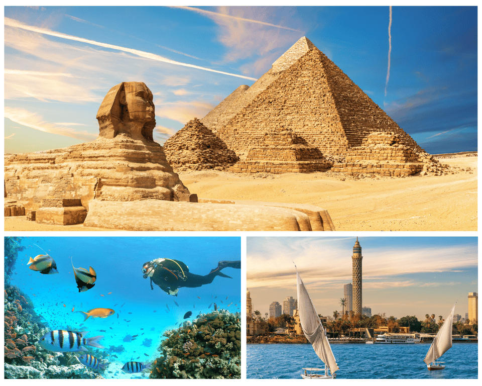
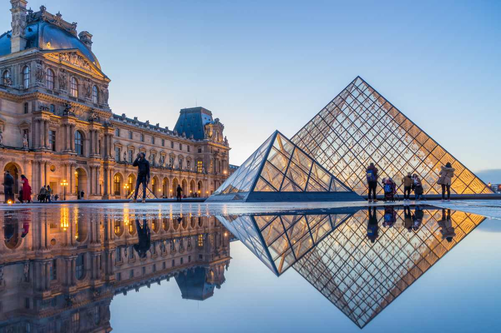
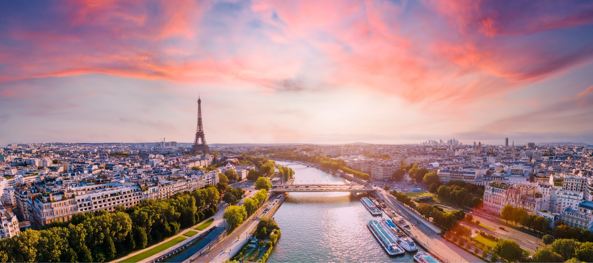
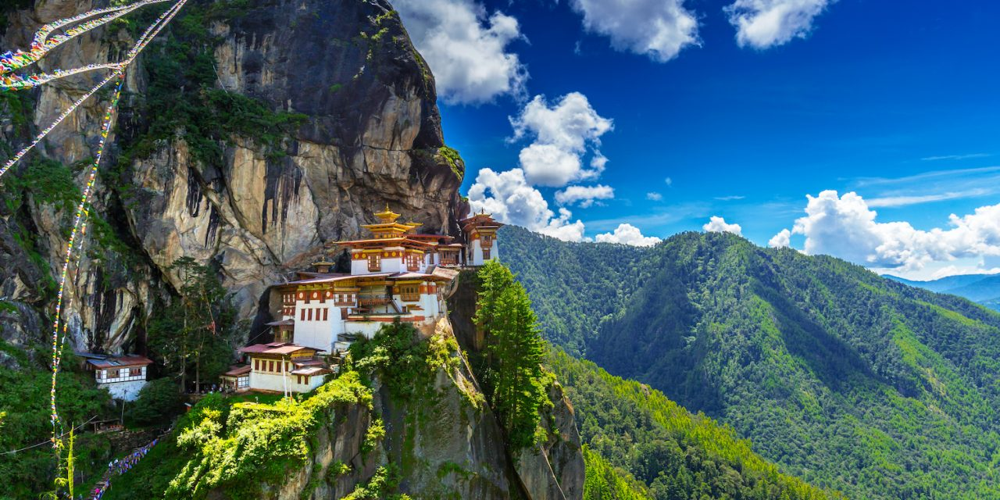
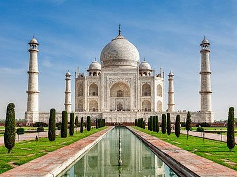
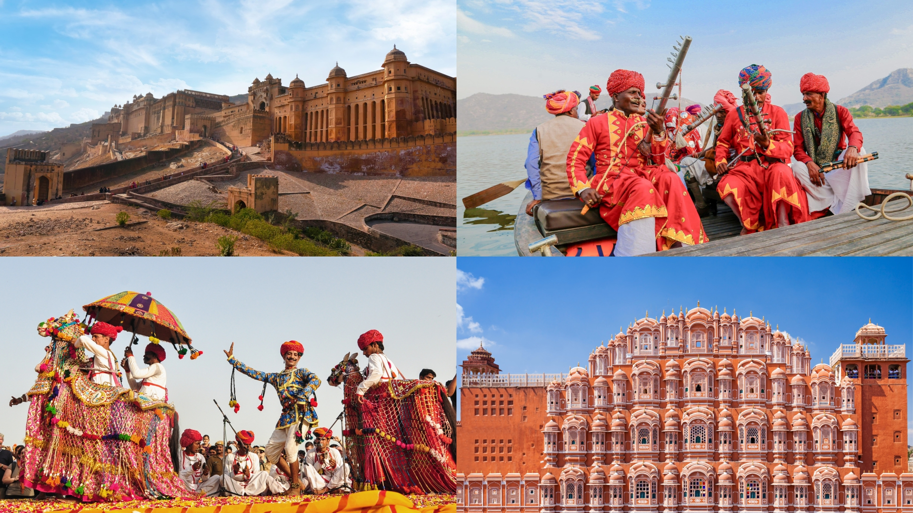
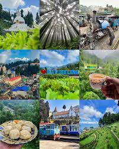

Egypt, a land of ancient wonders and vibrant culture, offers a captivating blend of history, art, and natural beauty. From the iconic pyramids and the Sphinx to the bustling markets of Cairo, Egypt is a treasure trove of experiences for travelers. The Nile River, with its timeless allure, provides a unique way to explore the country’s rich heritage. Whether you’re marveling at the Valley of the Kings or cruising along the Nile, Egypt promises an unforgettable journey through time and culture.
The best time to visit Egypt is during the cooler months of October to April, specifically December and January, when temperatures are comfortable for sightseeing in Cairo and Luxor. This peak season offers pleasant weather for Nile cruises, though it is the most crowded.
7-10 days is recommended to explore the major attractions in Egypt, including Cairo, Giza, and Luxor.
Depending on your preferred style of travel, a 7-day trip to Egypt during the peak season (October – April) typically ranges from ₹60,000 to over ₹2,00,000 per person. This generally includes international flights, mid-range accommodation, meals, and standard sightseeing.
Pyramids of Giza, Sphinx, Valley of the Kings, Abu Simbel, Nile River Cruise.
Local transportation options in Egypt include taxis, buses, and Nile River cruises. Taxis are widely available in cities like Cairo and Luxor, while buses connect major tourist destinations. Nile River cruises offer a scenic way to travel between attractions along the river.
Things to do in Egypt:
Mini Itinerary:


Paris, the City of Light
The best time to visit Paris is during the spring (April to June) and fall (September to November) when the weather is mild and the city is less crowded. Spring offers blooming gardens and outdoor cafes, while fall provides beautiful foliage and cultural events.
A 4-5 day trip is ideal for exploring Paris, allowing you to visit major attractions like the Eiffel Tower, Louvre Museum, and Notre-Dame Cathedral at a leisurely pace.
A 5-day trip to Paris typically ranges from ₹80,000 to ₹2,50,000 per person, depending on your choice of accommodation, dining preferences, and activities. This estimate includes international flights, mid-range hotels, meals, and standard sightseeing.
Eiffel Tower, Louvre Museum, Notre-Dame Cathedral, Montmartre, Seine River Cruise.
Paris has an extensive public transportation system that includes the Metro (subway), buses, trams, and RER trains. The Metro is the most popular way to get around the city, offering quick access to major attractions. Buses and trams provide additional options for exploring different neighborhoods.
Things to do in Paris:
Mini Itinerary:

The best time to visit Bhutan is during the spring (March to May) and fall (September to November) when the weather is pleasant and the landscapes are vibrant. Spring offers blooming rhododendrons, while fall provides clear skies and colorful festivals.
A 7-10 day trip is recommended to explore Bhutan's major attractions, including Paro, Thimphu, Punakha, and Bumthang.
A 7-day trip to Bhutan typically ranges from ₹1,00,000 to ₹3,00,000 per person, depending on your choice of accommodation, activities, and the time of year. This estimate includes international flights, accommodation, meals, transportation within Bhutan, and standard sightseeing.
Paro Taktsang (Tiger's Nest Monastery), Punakha Dzong, Thimphu's Buddha Dordenma statue, Bumthang Valley.
In Bhutan, local transportation options include taxis, buses, and private car hires. Taxis are available in cities like Paro and Thimphu for short trips. Buses connect major towns and tourist destinations. For a more personalized experience, many travelers opt for private car hires with drivers who can also serve as guides.
Things to do in Bhutan:
Mini Itinerary:

The best time to visit Agra is during the cooler months from October to March, with November to February being the peak season. During this time, the weather is pleasant and ideal for exploring the city's attractions, including the Taj Mahal.
A 2-3 day trip is sufficient to explore Agra's major attractions, including the Taj Mahal, Agra Fort, and Fatehpur Sikri.
A 3-day trip to Agra typically ranges from ₹10,000 to ₹30,000 per person, depending on your choice of accommodation, dining preferences, and activities. This estimate includes transportation, accommodation, meals, and standard sightseeing.
Taj Mahal, Agra Fort, Fatehpur Sikri, Mehtab Bagh.
In Agra, local transportation options include auto-rickshaws, cycle rickshaws, taxis, and app-based ride services like Ola and Uber. Auto-rickshaws are a popular choice for short distances within the city. For a more comfortable experience or longer trips between attractions, taxis and app-based ride services are widely available.
Things to do in Agra:
Mini Itinerary:

The best time to visit Rajasthan is during the cooler months from October to March, with November to February being the peak season. During this time, the weather is pleasant and ideal for exploring the state's rich culture and heritage.
A 7-10 day trip is recommended to explore Rajasthan's major attractions, including Jaipur, Udaipur, Jodhpur, and Jaisalmer.
A 7-day trip to Rajasthan typically ranges from ₹20,000 to ₹1,00,000 per person, depending on your choice of accommodation, dining preferences, and activities. This estimate includes transportation, accommodation, meals, and standard sightseeing.
Amber Fort (Jaipur), City Palace (Udaipur), Mehrangarh Fort (Jodhpur), Jaisalmer Fort.
In Rajasthan, local transportation options include taxis, auto-rickshaws, buses, and app-based ride services like Ola and Uber. Taxis are a convenient option for traveling between cities and major attractions. Auto-rickshaws are commonly used for short distances within cities. Buses connect major towns and tourist destinations across the state.
Things to do in Rajasthan:
Mini Itinerary:

The best time to visit Darjeeling is during the spring (March to May) and fall (September to November) when the weather is pleasant and the views of the Himalayas are clear. Spring offers blooming rhododendrons, while fall provides crisp air and vibrant foliage.
A 3-4 day trip is ideal for exploring Darjeeling's major attractions, including the Darjeeling Himalayan Railway, Tiger Hill, and local tea gardens.
A 4-day trip to Darjeeling typically ranges from ₹15,000 to ₹40,000 per person, depending on your choice of accommodation, dining preferences, and activities. This estimate includes transportation, accommodation, meals, and standard sightseeing.
Darjeeling Himalayan Railway (Toy Train), Tiger Hill, Batasia Loop, Padmaja Naidu Himalayan Zoological Park.
In Darjeeling, local transportation options include taxis, shared jeeps, and the iconic Darjeeling Himalayan Railway (Toy Train). Taxis are available for short trips within the town. Shared jeeps are a popular and affordable way to travel between nearby attractions. The Toy Train offers a unique experience for exploring the scenic routes around Darjeeling.
Things to do in Darjeeling:
Mini Itinerary: